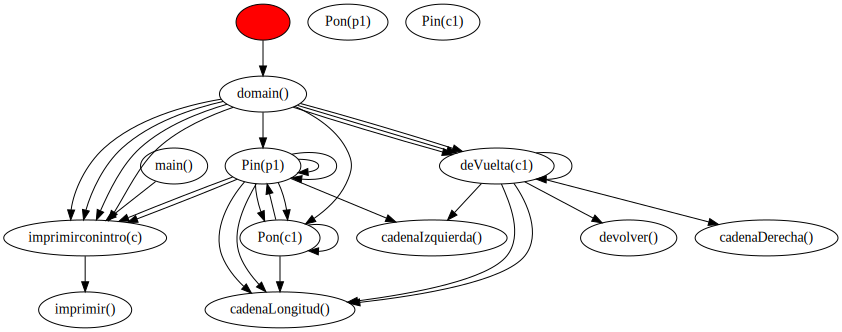

function prueba():void
- Complejidad ciclomática V(G): FALTA EL VALOR
- Puntos función: 36
- Resumen:
- Variables declaradas: 0
- Líneas de código efectivas: 3
- Número de parámetros esperados: 0
- Número de llamadas a funciones: 2
- Grafo de complejidad ciclomática:
- Grafo de llamadas a funciones: FALTA EL GRAFO (IMG)
PUNTOS PROGRAMA COMPLETO
- Complejidad ciclomática V(G): FALTA EL VALOR
- Puntos función: 36
- Resumen:
- Variables declaradas: 0
- Líneas de código efectivas: 3
- Número de parámetros esperados: 0
- Número de llamadas a funciones: 2
- Grafo de complejidad ciclomática: FALTA EL GRAFO (IMG)
- Grafo de llamadas a funciones:
